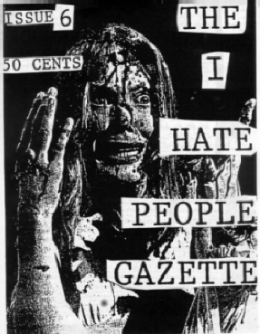

This special Samhain issue of the Iconoclast is dedicated
to Kevin Person, and the I Hate People Gazette.
I knew Kevin many years ago. We began our relationship through
the art of letters and then moved on to a friendship, and
mutual "hanging out" with random people whom we found "cool"
enough to do so. The Gazette began with Kevin ranting
away in confessional style, some self-pity "girls hate me
cartoons from other friends, and the occasional odd photo
of some horror movie hero or heroine being chopped to bits,
or (as in the case with the illustrated copy here) covered in
blood of some rotting carcass (sometimes human). Kevin's wry wit
and humour carried many young teen through his or her own personal
hell (how fitting--rotting carcasses--hell) whether it was
self inflicted or no. I never
saw it beyond its sixth issue and am curious why he never continued
writing and illustrating zines, but i am just a silly girl.
I wonder sometimes what happen to this man.
Last i heard he had given in and bought a car, and that was a damn
long time ago. A docile youth turned
killer through his own subversive writing, Kevin Person
has gone missing. I have tried repeatedly to find
him at his usual haunts, to no avail. If anyone has
seen or heard from this man, please approach him with
caution, then proceed to kick his ass for me for not returning my
phone calls.
The Iconoclast Halloween Issue
I'm too scared to read on--take me back to the main page!